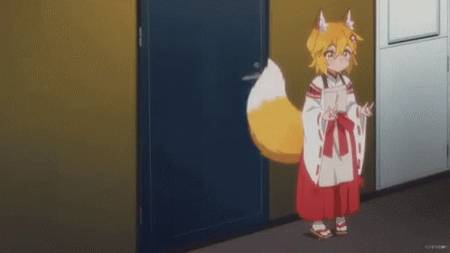

SINOPSIS
La serie la protagoniza Nakano, empleado de una compañía que explota a sus trabajadores y que acaba conociendo por un casual a un espíritu divino de zorro llamado Senko. Aunque Senko tiene aspecto de ser una jovencita, en realidad tiene más de 800 años. Tras su encuentro, Senko prometerá cuidar de Nakano y proporcionarle todo lo que necesite.
